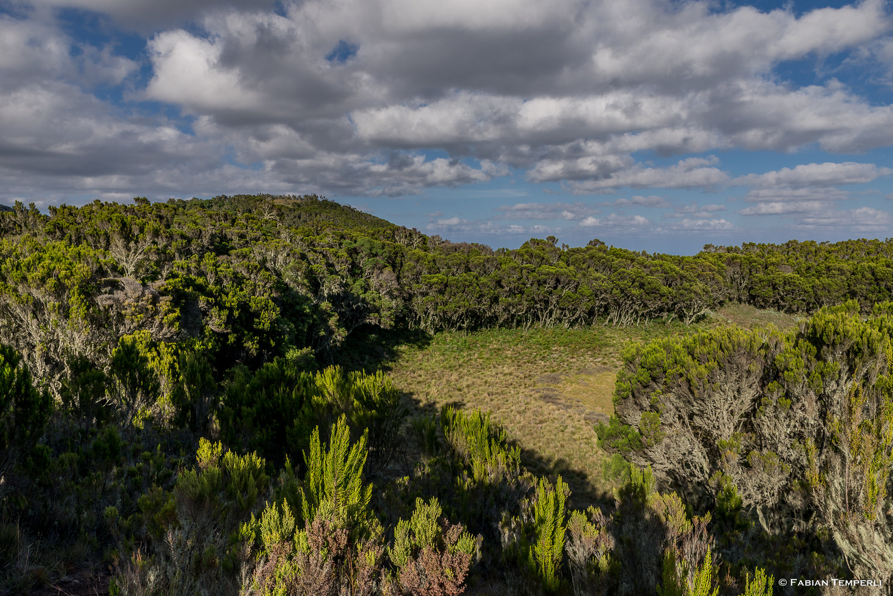

Experience Highlights
Discover the magic of Africa's rooftop without the multi-day commitment on our exhilarating Kilimanjaro day hike. This accessible adventure takes you through the lush rainforests of Kilimanjaro's lower slopes, offering a perfect introduction to the mountain's diverse ecosystems and breathtaking scenery.
Beginning at the iconic Marangu Gate, you'll trek through enchanting montane forests teeming with unique flora and fauna, ascending to Mandara Hut where panoramic views await. This carefully designed itinerary provides a genuine Kilimanjaro experience condensed into one unforgettable day, suitable for families and casual hikers alike.
What to Expect
Rainforest Exploration: Walk through mystical cloud forests filled with ancient trees, colorful mosses, and chattering monkeys.
Mountain Vistas: Enjoy spectacular views of Kilimanjaro's peaks and surrounding landscapes from strategic viewpoints.
High-Altitude Experience: Acclimate to 2,700m elevation at Mandara Hut while learning about mountain ecosystems.
Cultural Insight: Meet local guides and porters who share their deep knowledge of the mountain.
Perfect For
First-time visitors wanting a Kilimanjaro experience without summit pressure
Families with children (minimum age 10 recommended)
Those testing their fitness for future summit attempts
Nature lovers seeking diverse flora and fauna
Travelers with limited time but unlimited curiosity
This Kilimanjaro day hike offers more than just exercise - it's an immersion into the mountain's lower ecosystems, a chance to breathe the crisp alpine air, and an opportunity to create lifelong memories on Africa's most iconic peak. Book your mountain adventure today!
Request a Quote
Trip Itinerary
Trip Itinerary
Kilimanjaro National Park: Marangu Route
Pre-Hike Preparation
Your mountain adventure begins the evening before with a comprehensive briefing from your guide at your Arusha accommodation. This orientation covers route details, safety protocols, and packing recommendations to ensure you're fully prepared for the day ahead.
Morning Ascent (6:00 AM - 12:00 PM)
After an early breakfast, we depart Arusha at dawn, driving approximately 2 hours to Marangu Gate (1,800m). Following registration with park authorities, we begin our hike through Kilimanjaro's lush rainforest zone. The well-maintained trail winds through dense vegetation, with your guide pointing out unique plant species and wildlife. After 3-4 hours of steady climbing, we reach Mandara Hut (2,743m) where we'll enjoy a well-earned picnic lunch.
Afternoon Exploration (12:00 PM - 3:00 PM)
After refueling, explore the hut area and nearby Maundi Crater for spectacular views of Kilimanjaro's peaks and the surrounding plains. On clear days, you can see all the way to Kenya's Tsavo National Park. This is the perfect opportunity for photos and to experience the mountain's unique microclimate.
Descent & Return (3:00 PM - 6:00 PM)
We begin our descent through the rainforest, often spotting blue monkeys and various bird species. After reaching Marangu Gate, we'll celebrate your achievement with certificates before the return drive to Arusha, arriving by early evening.
Included
Excluded
Included
- Round-trip transportation from Arusha hotels
- Professional mountain guide and assistant
- All national park fees and permits
- Picnic lunch at Mandara Hut
- Certified first aid kit and emergency oxygen
- Hiking certificate upon completion
- All government taxes and VAT
Excluded
- International flights
- Tanzania visa fees
- Travel insurance (highly recommended)
- Personal hiking gear (rentals available)
- Gratuities for guides and staff
- Accommodation before/after hike
- Items of personal nature
Ready for Your Mountain Adventure?
Experiences
Our Kilimanjaro day hike offers a carefully crafted combination of physical challenge, natural wonders, and mountain culture - all condensed into one unforgettable day on Africa's highest peak.
Included Adventures
-
Rainforest Trek :
Journey through Kilimanjaro's mystical montane rainforest, home to ancient trees draped in "old man's beard" moss and lively blue monkeys. Your guide will point out unique flora like giant ferns and wild orchids while explaining the forest's vital role in Kilimanjaro's ecosystem.
-
Mandara Hut Exploration :
Reach the historic Mandara Hut (2,743m), a key stop for summit-bound climbers. Explore the alpine-style huts and surrounding gardens while learning about Kilimanjaro's climbing history. This is your base for lunch and the turnaround point for our day hike.
-
Alpine Picnic Experience
Enjoy a hearty packed lunch at Mandara Hut's picnic area, surrounded by giant groundsels and the sounds of the mountain. Our meals are designed to fuel your hike while introducing you to local flavors and fresh ingredients.
Mountain Insights
-
Maundi Crater Walk :
Take a short but rewarding side trip to this volcanic crater near Mandara Hut. The viewpoint offers panoramic vistas of Kilimanjaro's peaks and, on clear days, views stretching across the plains to Kenya. Perfect for memorable photos and appreciating the mountain's scale.
 -
Mountain Ecology Lesson
Learn about Kilimanjaro's unique ecosystems from your expert guide. Discover how vegetation changes with altitude, spot interesting birdlife, and understand the mountain's vital role as Tanzania's "water tower" supplying rivers and farms below.
-
Summit Dreams Session (Optional)
Considering a full summit attempt? During the descent, your guide can share insider tips about preparing for Kilimanjaro's higher routes, including training recommendations, gear advice, and what to expect at greater altitudes.
Ready to Hike Kilimanjaro?
Essential Gear & Requirements
Proper preparation ensures your comfort and safety during this mountain adventure. Below you'll find our recommended gear list and important travel requirements.
Hiking Essentials
- Sturdy hiking boots: Broken-in with good ankle support
- Layered clothing: Moisture-wicking base to warm outer layers
- Rain gear: Waterproof jacket and pants (forest can be wet)
- Sun protection: SPF 50+, sunglasses, and wide-brim hat
- Camera/phone: With extra batteries/power bank
- Water bottles: 2-3 liters capacity (we provide bottles and water)
- Personal meds: Including altitude sickness prevention if needed
Travel Requirements
- Valid passport: Minimum 6 months validity
- Tanzania visa: Obtainable on arrival or online
- Yellow fever certificate: If arriving from endemic regions
- COVID-19 documents: Check current requirements
- Travel insurance: Covering mountain activities